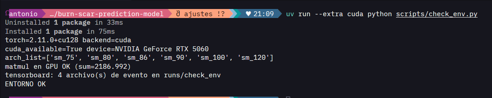
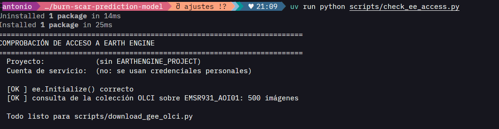
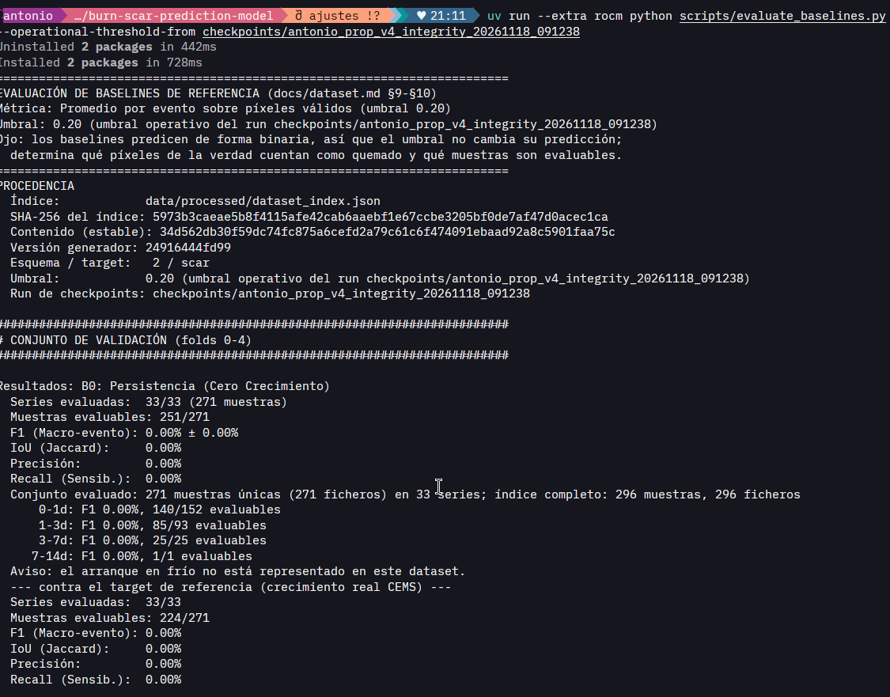
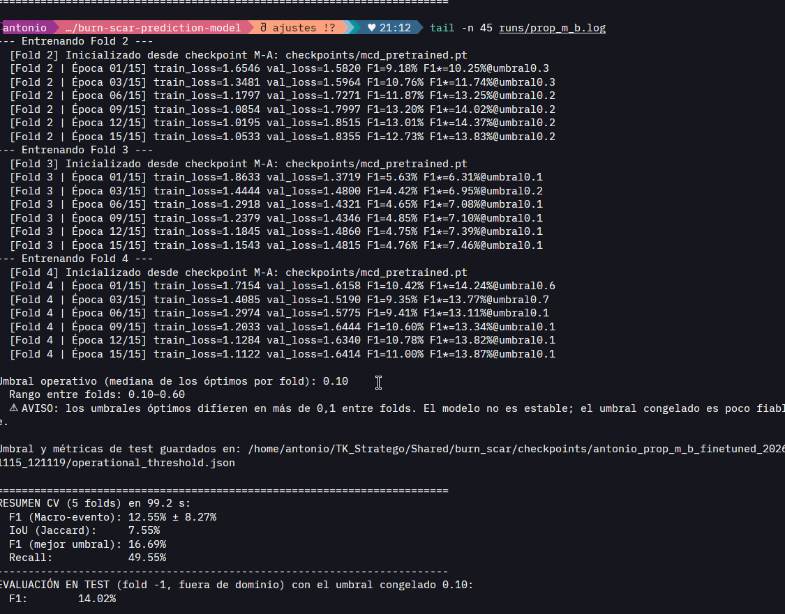
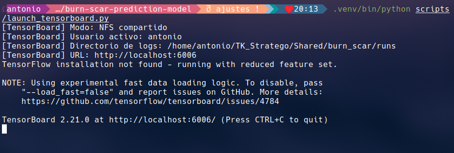
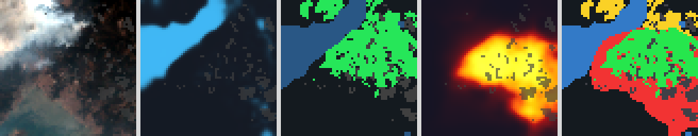
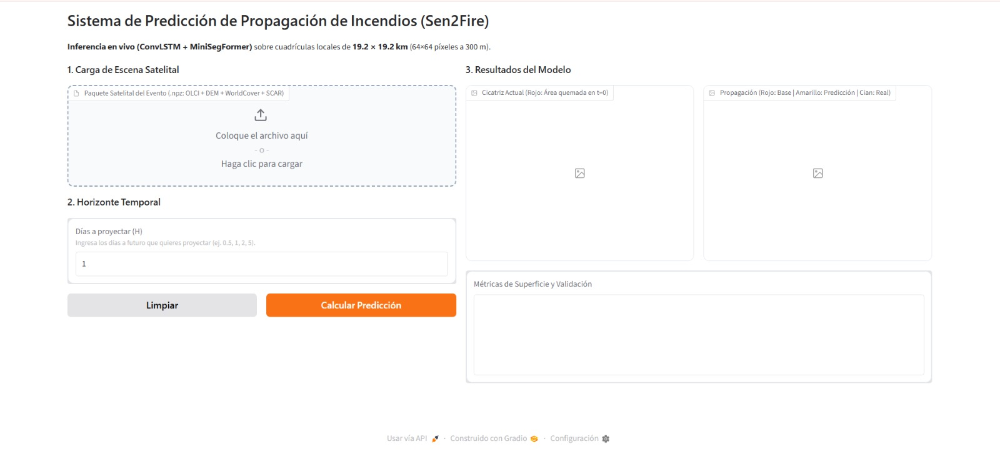
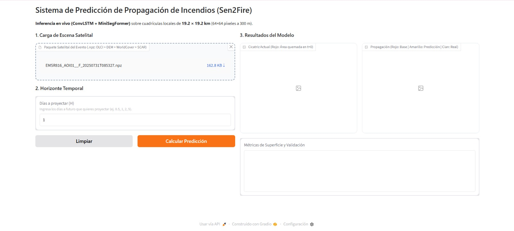
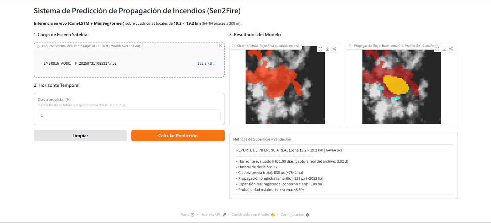

Predicción multi-horizonte del crecimiento de cicatrices de incendios forestales en el Mediterráneo a partir de imágenes satelitales abiertas.
Este documento explica cómo instalar, configurar, entrenar, monitorear y usar el proyecto Burn Scar Prediction Model. Está organizado paso a paso para poder replicar todo desde cero o partir directamente con los archivos preprocesados y checkpoints listos para usar.
El objetivo del sistema no es solo detectar dónde ya ocurrió un incendio, sino predecir qué zonas nuevas se quemarán en los próximos h días (predicción de propagación). Como entrada recibe imágenes satelitales de Sentinel-3 OLCI (5 bandas a 300 m, revisita ~2–3 días), topografía (Copernicus DEM), cobertura de suelo (ESA WorldCover), la cicatriz actual estimada y el horizonte continuo h en días.
x_scar) la genera TMB-S3 congelado sobre Sentinel-3, asegurando que entrenamiento e inferencia reciban exactamente el mismo tipo de entrada.[0, 1].64×64 px = 19,2 km).
Se requiere Linux (recomendado), Python ≥ 3.11 y el gestor
uv. El archivo pyproject.toml gestiona las siguientes dependencias principales:
| Librería | Versión | Uso en el proyecto |
|---|---|---|
torch, torchvision |
≥ 2.7 / ≥ 0.22 | Entrenamiento e inferencia (extras excluyentes: cuda, rocm o cpu). |
earthengine-api |
≥ 1.7.52 | Descarga de parches OLCI, MODIS MCD64A1, DEM y WorldCover desde Google Earth Engine. |
rasterio, pyproj, shapely |
≥ 1.4 / 3.7 / 2.2 | Lectura de GeoTIFF, proyección UTM a 300 m y rasterización de polígonos CEMS. |
numpy, zarr, scikit-learn |
≥ 1.26 / 3.1 / 1.9 | Manejo de tensores .npz, lectura de tiles TMB-S3, clustering DBSCAN y métricas. |
huggingface-hub, safetensors |
≥ 2.4 / ≥ 0.8 | Descarga y carga de pesos congelados de TMB-S3. |
tensorboard |
≥ 2.18 | Visualización de curvas de entrenamiento (SCALARS) y mapas de predicción (IMAGES). |
pytest, ruff (dev) |
≥ 8 / ≥ 0.8 | Pruebas automáticas y revisión de estilo de código. |
# 1. Clonar el repositorio
git clone <URL_DEL_REPOSITORIO>
cd burn-scar-prediction-model
# 2. Instalar uv (si no está instalado)
curl -LsSf https://astral.sh/uv/install.sh | sh
# 3. Instalar dependencias (elegir SOLO UNA opción según tu hardware)
uv sync --extra cuda # NVIDIA (CUDA 12.8)
uv sync --extra rocm # AMD (ROCm 6.4)
uv sync --extra cpu # Solo CPU
# 4. Verificar GPU y escritura de TensorBoard
uv run --extra cuda python scripts/check_env.py # cambiar 'cuda' por 'rocm' o 'cpu'
NixOS: el repositorio incluye devenv.nix para trabajar en un entorno
reproducible con las librerías nativas (libexpat.so.1 para rasterio).
Los datasets procesados y los checkpoints no se suben a Git por su tamaño. Para usar el proyecto sin tener que descargar imágenes desde Google Earth Engine, descarga el paquete comprimido y descomprímelo en la raíz del repositorio:
Enlace de descarga (Google Drive): https://drive.google.com/file/d/1rinLTk0nSbPBATFM_2esE8rzxyTqKFPQ/view?usp=sharing
Al descomprimirlo en la raíz del proyecto deben quedar las carpetas data/processed/,
data/cems_manifest_46.json, checkpoints/ y models/tmb_s3/.

scripts/check_env.py): detección de GPU, cómputo y escritura de logs de TensorBoard..env
Cada máquina usa su propio archivo .env en la raíz del proyecto (ignorado por Git).
Se crea copiando la plantilla: cp .env.example .env.
| Variable | Ejemplo / valor por defecto | Descripción |
|---|---|---|
BURNSCAR_SHARED_STORAGE |
/home/usuario/TK_Stratego/Shared |
Ruta de montaje NFS compartida para sincronizar logs y checkpoints. Si no existe o queda vacía, usa respaldo local (./runs y ./checkpoints). |
BURNSCAR_USER |
antonio |
Identificador para prefijar tus carpetas (<usuario>_<tag>_<timestamp>) y no pisar experimentos de otros integrantes. |
BURNSCAR_TENSORBOARD_PORT |
6006 |
Puerto HTTP por defecto para TensorBoard. |
EARTHENGINE_PROJECT |
mi-proyecto-gcp (opcional) |
Proyecto de Google Cloud habilitado para Earth Engine (solo si vas a descargar datos satelitales nuevos). |
EARTHENGINE_SERVICE_ACCOUNT |
~/.config/earthengine/sa.json |
Clave JSON de cuenta de servicio para servidores sin navegador. En PC normal basta usar earthengine authenticate. |
Para verificar credenciales de Earth Engine antes de descargar: uv run python scripts/check_ee_access.py.
| Ruta | Contenido | Notas |
|---|---|---|
data/raw/, data/raw_mcd/ |
Imágenes satelitales crudas (OLCI, DEM, WorldCover, MODIS) y vectores CEMS. | Solo necesario si regeneras el dataset desde cero. |
data/processed/ |
Muestras PyTorch (samples/*.npz) e índice dataset_index.json. |
Generado por build_pytorch_dataset.py (o descargado de Drive). |
checkpoints/<run>/ |
Mejores pesos por fold (best_fold_0..4.pt) y umbral congelado (operational_threshold.json). |
En NFS (.../burn_scar/checkpoints/) o en ./checkpoints/ local. |
runs/<run>/ |
Eventos de TensorBoard (events.out.tfevents.*) y logs de ejecución (*.log). |
En NFS (.../burn_scar/runs/) o en ./runs/ local. |
outputs/ |
Paneles de predicción exportados en formato .png. |
Se especifica con --save-dir. |
artefactos/canonicos.json |
Huellas SHA-256 de índices y checkpoints oficiales para validar integridad. | Versionado en Git. |

.env y verificación de rutas / acceso.
Si ya descargaste data/processed/ desde el Drive, puedes saltar directo a la evaluación
de baselines o a la Sección 5. Si modificaste el preprocesamiento o descargas datos crudos nuevos,
debes regenerar los archivos .npz antes de entrenar:
# 1. Descarga de datos crudos (solo si no los tienes)
uv run python scripts/download_cems_vectors.py
uv run python scripts/download_gee_olci.py
uv run python scripts/rasterize_cems_labels.py
# 2. Ensamblar dataset PyTorch (ejecuta TMB-S3 congelado; ~20 s en GPU)
uv run --extra rocm python scripts/build_pytorch_dataset.py
# 3. Auditar integridad del índice (verifica ausencia de duplicados y capas vacías)
uv run --extra rocm python scripts/audit_dataset_integrity.py \
--index data/processed/dataset_index.json \
--output runs/dataset_integrity_production.json
# 4. Evaluar baselines de referencia (B0 persistencia, B1 dilatación radial y trivial)
uv run --extra rocm python scripts/evaluate_baselines.py.npz:
cada muestra guarda dos objetivos: target (ensamblaje:
CEMS(r+h) - scar_TMB3(f), usado para entrenar) y target_cems
(referencia: crecimiento real entre rondas CEMS, que es la métrica publicable
de propagación). Las máscaras usan 1 = píxel evaluable y 255 = ignorado.
Opcional — Dataset MODIS (MCD64A1) para preentrenamiento M-A:
uv run python scripts/build_mcd64a1_manifest.py --max-events 500
uv run python scripts/download_gee_mcd64a1.py --manifest data/mcd_manifest.json
uv run --extra rocm python scripts/build_mcd64a1_dataset.py
El entrenamiento se realiza con scripts/train_propagation.py usando validación cruzada
agrupada de 5 folds (0..4). El fold -1 queda reservado
como test final. Al concluir los 5 folds, el script toma la mediana de los mejores umbrales de
validación, la congela en operational_threshold.json y evalúa el test una sola vez.
# A) Entrenamiento estándar (lanzado con nohup para evitar cortes)
nohup uv run --extra rocm python scripts/train_propagation.py \
--epochs 15 --seed 42 --tag prop_v4_integrity \
> runs/prop_v4_integrity.log 2>&1 &
tail -f runs/prop_v4_integrity.log
# B) Etapa M-A (preentrenamiento MODIS) + Etapa M-B (ajuste fino CEMS con Tversky)
uv run --extra rocm python scripts/pretrain_mcd64a1.py \
--epochs 10 --output-checkpoint checkpoints/mcd_pretrained.pt
uv run --extra rocm python scripts/train_propagation.py \
--epochs 15 --seed 42 \
--init-checkpoint checkpoints/mcd_pretrained.pt \
--tversky-alpha 0.7 --tversky-beta 0.3 --max-pos-weight 5.0 \
--tag prop_m_b_tverskytrain_propagation.py| Flag | Default | Función |
|---|---|---|
--epochs / --batch-size |
15 / 8 |
Épocas por fold y tamaño de lote (~1,5–2 min en total para 5 folds en GPU). |
--lr / --hidden-ch |
3e-4 / 32 |
Tasa de aprendizaje (Adam) y canales ocultos del ConvLSTM. |
--folds / --seed |
0 1 2 3 4 / 42 |
Folds a entrenar y semilla de reproducibilidad. |
--scar-corruption |
0.15 |
Borra ~15% de la cicatriz de entrada y deforma su borde para tolerar errores de TMB-S3. |
--max-pos-weight |
5.0 |
Tope del peso positivo en BCE para manejar el desbalance de clases. |
--tversky-alpha / --tversky-beta |
0.7 / 0.3 |
Pesos de la pérdida Tversky (penalizar más FP mejora precisión y estabilidad del umbral). |
--init-checkpoint |
None |
Checkpoint inicial para fine-tuning (ej. checkpoints/mcd_pretrained.pt). |
--num-workers / --pin-memory |
Auto | Auto-detecta backend: usa 0 workers en AMD ROCm y 2 en NVIDIA CUDA. |
--tag |
propagation_... |
Nombre identificador del run en runs/ y checkpoints/. |
--eval-only <dir> |
None |
Reevalúa un run ya entrenado sobre el test usando su umbral congelado. |

El script launch_tensorboard.py detecta automáticamente si estás usando el NFS
compartido o la carpeta local ./runs y levanta el servidor web:
uv run --extra cuda python scripts/launch_tensorboard.py
# Opciones útiles: --port 6007 | --host 0.0.0.0 | --dry-run
Al abrir http://localhost:6006: en SCALARS puedes filtrar por nombre de
usuario en la barra izquierda para comparar curvas (Loss/train, Loss/val,
F1, IoU); en IMAGES aparecen los mapas generados por el visualizador.

Para inspeccionar un checkpoint en su fold de validación y exportar los paneles a TensorBoard y PNG:
uv run --extra rocm python scripts/visualize_predictions.py \
--checkpoint checkpoints/<run_namespace>/best_fold_0.pt \
--mode both --n-samples 6 --threshold 0.20 --scale 3 \
--save-dir outputs/vis_fold0
Modos disponibles (--mode): both (N mejores y N peores), best,
worst, series --series-id <ID>, indices --indices 0 5 y
random. Cada panel muestra 5 bloques: 1) OLCI pseudo-RGB,
2) cicatriz previa x_scar, 3) target real,
4) mapa de probabilidad y 5) overlay TP/FP/FN
(azul = cicatriz previa, verde = acierto TP, rojo = falsa alarma FP, amarillo = omisión FN, gris = ignorado).

visualize_predictions.py.uv run --extra rocm python scripts/sweep_thresholds.py --checkpoint-dir checkpoints/<run> --split test
uv run --extra rocm python scripts/evaluate_baselines.py --operational-threshold-from checkpoints/<run>
uv run --extra rocm python scripts/verify_canonical_artifacts.py| Modelo (Test fold -1 · 25 muestras, 7 series) | Umbral | F1 Ensamblaje | F1 Referencia | Precisión |
|---|---|---|---|---|
| B0 Persistencia / B1 Dilatación radial | 0,10 | 0,00% / 15,94% | 0,00% / 7,30% | 0,00% / 19,11% |
| Trivial "todo quemado" | 0,10 | 16,29% | 8,42% | 9,41% |
M-A (mcd_pretrained, cero-disparo sin CEMS) |
0,10 | 19,71% | 10,61% | 14,05% |
M-B + Tversky (prop_m_b_tversky, α=0,7) |
0,10 | 32,90% | 10,08% | 39,53% |
Producción (prop_v4_integrity) |
0,10 / 0,20 | 36,46% / 39,34% | 14,68% / 10,59% | 28,40% / 33,12% |
El módulo de interfaz gráfica (interfaz-gradio) provee un entorno web interactivo local
para ejecutar inferencias del modelo ConvLSTM + MiniSegFormer sin necesidad de interactuar
con la línea de comandos. Está diseñado para operar sobre cuadrículas espaciales de
19,2 × 19,2 km (parches de 64×64 píxeles a 300 m de resolución).
Requiere Python ≥ 3.11 y el gestor de paquetes uv (o pip).
A diferencia del módulo de entrenamiento, la interfaz web puede ejecutarse de forma ligera tanto en
entornos con GPU como en estaciones de trabajo estándar solo con CPU.
| Librería | Versión | Función en la interfaz |
|---|---|---|
gradio |
≥ 4.44 (probado en 6.30) | Despliegue del servidor web local, componentes de carga de archivos y renderizado reactivo. |
torch |
≥ 2.1 (CPU / CUDA) | Carga del checkpoint entrenado (best_fold_0.pt) y ejecución del pase hacia adelante (inference_mode). |
numpy |
≥ 1.26 | Lectura de paquetes satelitales comprimidos (.npz) y tensores multidimensionales. |
opencv-python |
≥ 4.9 | Reescalado visual de matrices (64×64 a 320×320 px) y aplicación de mapas térmicos (COLORMAP_INFERNO). |
# 1. Clonar el repositorio de la interfaz gráfica
git clone <URL_DEL_REPOSITORIO_FRONTEND>
cd interfaz-gradio
# 2. Sincronizar dependencias mediante uv (recomendado) o pip
uv sync
# Alternativa con entorno virtual estándar:
# python3.11 -m venv .venv && source .venv/bin/activate
# pip install gradio torch numpy opencv-python
# 3. Verificar que existan las carpetas 'models/' y 'pesos/best_fold_0.pt' en la raíz y ejecutar:
uv run python main.py
Acceso local: al iniciar main.py, el servidor levantará la aplicación en
http://127.0.0.1:7860. Basta con abrir esa dirección en cualquier navegador web.
.npz (que integran las bandas Sentinel-3 OLCI, elevación DEM, cobertura WorldCover y cicatriz inicial SCAR) así como tensores individuales .npy.0.20) para contabilizar píxeles críticos y estimar la superficie afectada en hectáreas (considerando 9 ha por píxel de 300 × 300 m), contrastando además contra la expansión real registrada (ground truth) cuando está disponible en el archivo de prueba.
EMSR689_AOI01__F_20230901T081622.npz).
La interfaz validará el peso y formato del tensor cargado.
1.5 o 2.0 días). Si se ingresa 0,
el sistema utiliza por defecto el horizonte original registrado en los metadatos del archivo.

.npz) y definición del horizonte temporal H.
| Problema | Solución |
|---|---|
| Entrenamiento muy lento en AMD (ROCm) | En ROCm, num_workers > 0 o pin_memory=True bloquean el contexto HIP (~80 s/época vs 1,7 s). Usa el modo automático o fuerza --num-workers 0 --no-pin-memory. |
| Error de permisos en Google Earth Engine | Ejecuta scripts/check_ee_access.py. La cuenta de servicio necesita los roles earthengine.resourceAdmin y serviceusage.serviceUsageConsumer, y el proyecto debe estar registrado en EE. |
| No aparece el almacenamiento compartido NFS | Si BURNSCAR_SHARED_STORAGE no está montado, el tracker cambia automáticamente a ./runs y ./checkpoints en local sin detener el entrenamiento. |
| Cambios en el dataset no se reflejan al entrenar | Las entradas y targets quedan guardados en los .npz. Siempre re-ejecuta scripts/build_pytorch_dataset.py tras modificar el preprocesamiento. |
F1 = NaN en algunas muestras |
Es normal cuando la verdad de esa muestra no tiene píxeles quemados por encima del umbral (cuenta como no evaluable, no como 0). |